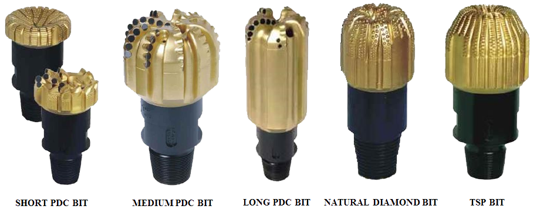
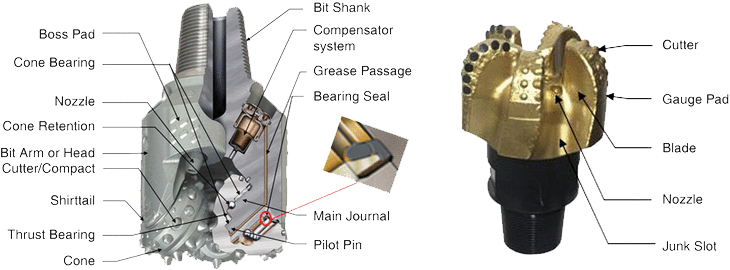
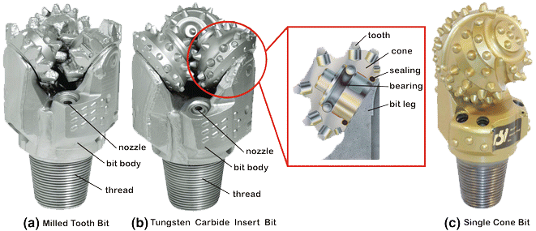
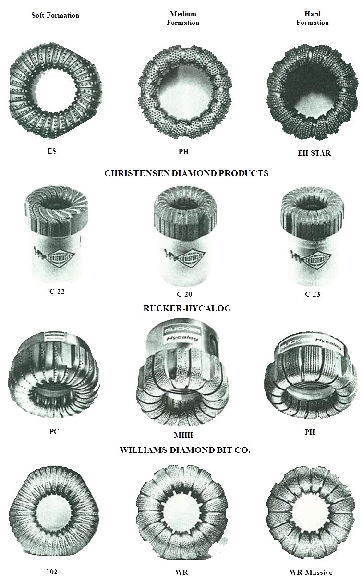

A variety of bits are available for drilling and sampling operation. The selection of bit is usually dependent on the formation which is to be drilled and the purpose of the borehole.



CORE BIT
